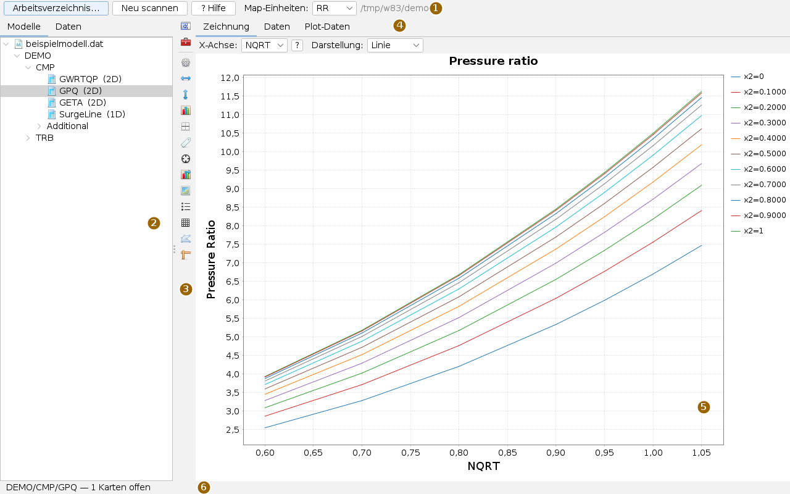
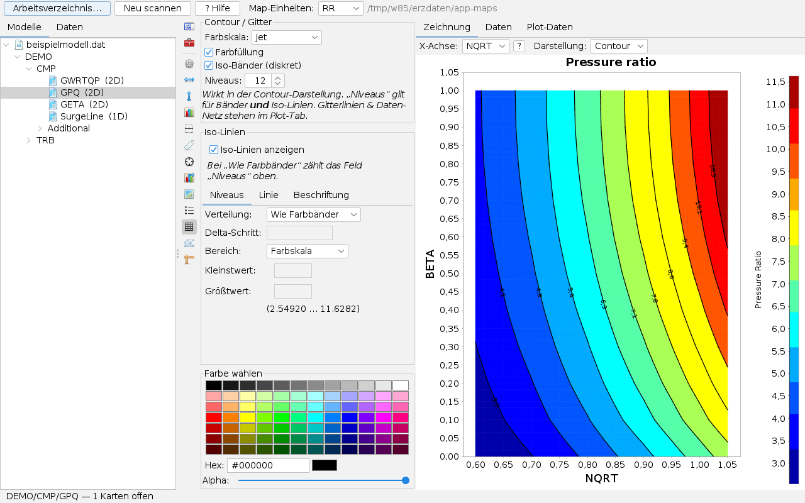
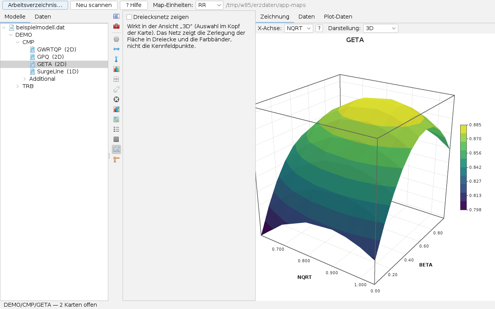
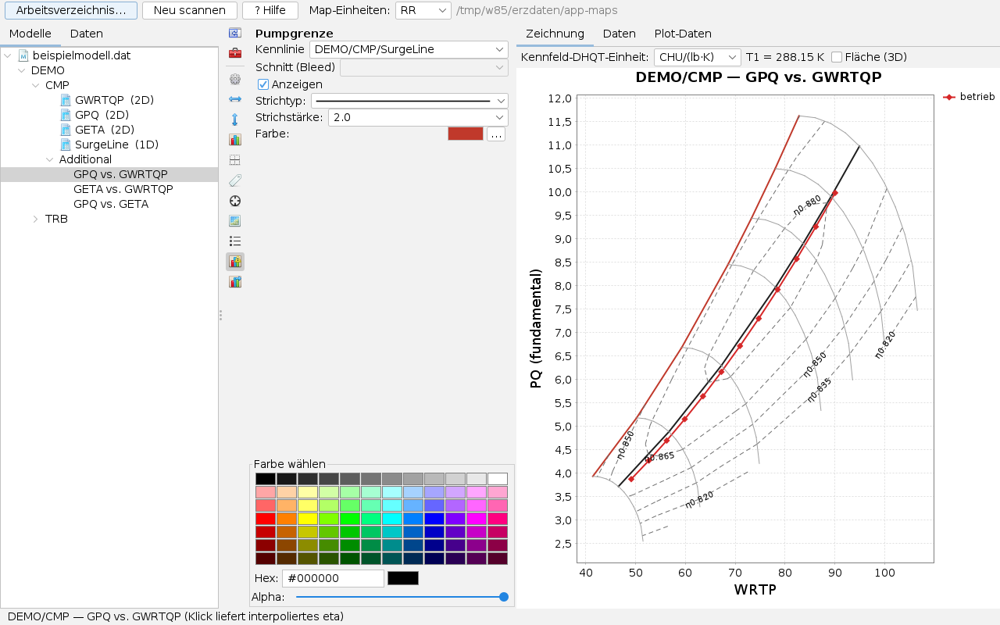
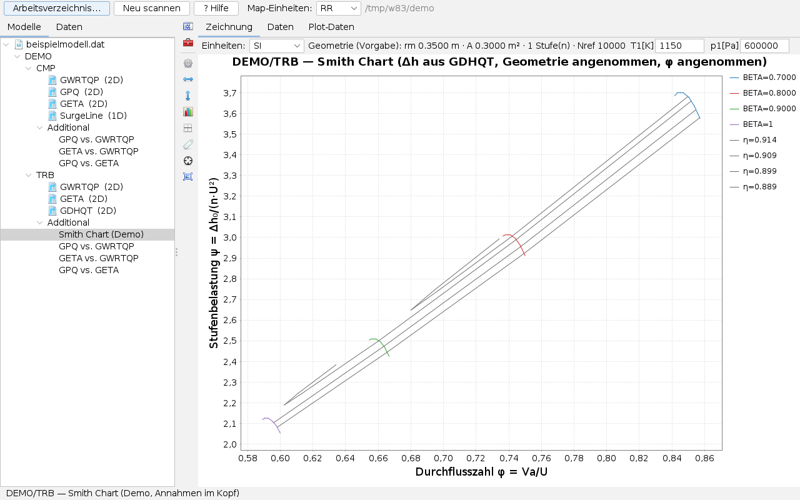
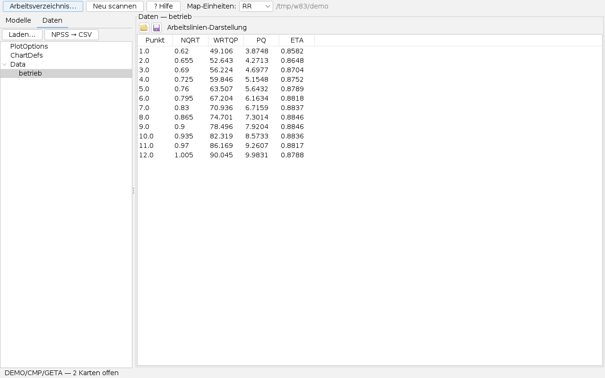
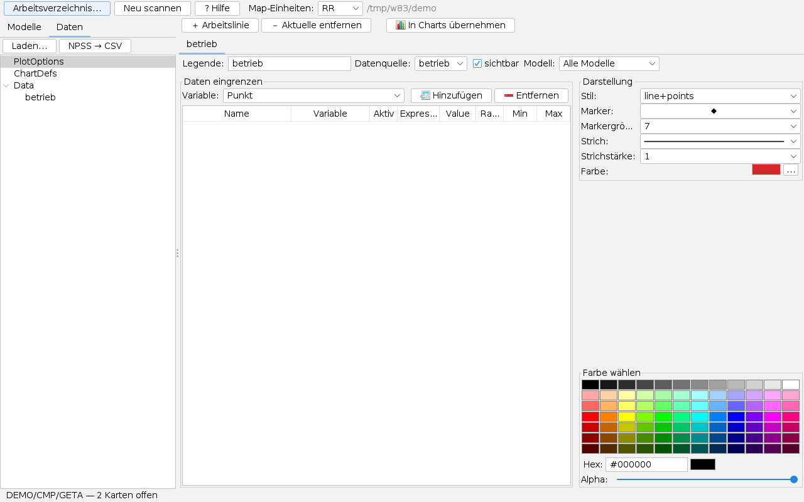
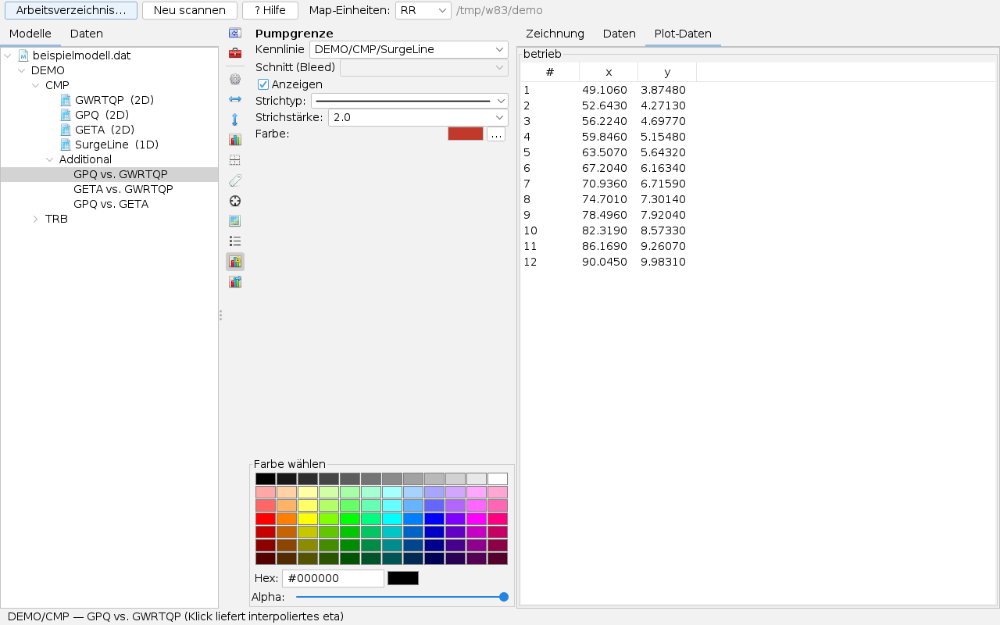
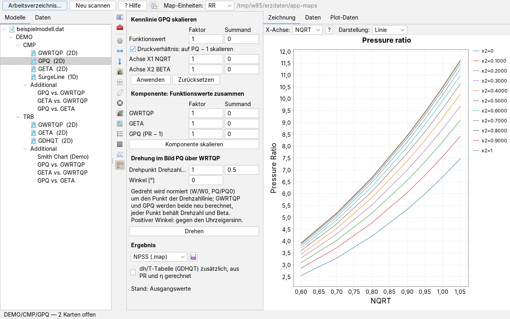

Component Maps bedienen
Bedienseite, Stand 07.10.2026. Wie man ein Modellverzeichnis einliest, Kennlinien als Linienschar, Contour oder Fläche ansieht, abgeleitete Kennfelder mit Pumpgrenze und Wirkungsgradinseln aufbaut, Arbeitslinien aus Messdaten darüberlegt, das Smith-Diagramm einer Turbine liest, Kennfelder skaliert und zwischen Formaten umwandelt. Die Bilder sind Bildschirmfotos der App mit einem frei erfundenen Beispielmodell (ein Verdichter, eine Turbine) und einer erfundenen Arbeitslinie.
Das Fenster
Die App öffnet man im Menü Anwendungen mit Component Maps öffnen… oder mit Alt+K; eine Datei .dat oder .map öffnet sie direkt.

Jeder angeklickte Baumeintrag öffnet eine Karte rechts; geöffnete Karten bleiben im Hintergrund und erscheinen beim nächsten Klick sofort wieder, die Statuszeile zählt sie. Zwischen Baum und Karte steht die senkrechte Leiste: ihre beiden oberen Knöpfe klappen den Baum und den Optionsbereich ein und aus, die übrigen öffnen eine Optionsseite zur sichtbaren Karte. Welche Seiten es gibt, hängt von der Art der Karte ab (siehe Die Leiste). Die Trennlinien lassen sich verschieben.
Ein Kennfeld in fünf Schritten
- Arbeitsverzeichnis… drücken und den Ordner mit den Kennfelddateien wählen. Die App liest ihn ein und zeigt Dateien, Komponenten und Kennlinien als Baum.
- Eine Kennlinie anklicken, etwa
GPQ (2D). Rechts erscheint sie als Linienschar; die Kopfzeile schaltet auf Contour oder 3D um. - Unter Additional das abgeleitete Bild GPQ vs. GWRTQP wählen: Druckverhältnis über Durchsatz mit Wirkungsgradinseln. Auf der Seite Sonderlinien die Drehzahllinien zuschalten, auf Pumpgrenze die Pumpgrenze.
- Im Reiter Daten links mit Laden… eine CSV mit Betriebspunkten einlesen; die Arbeitslinie erscheint auf allen Karten, für die eine Zuordnung von x und y besteht.
- Ein Klick ins Diagramm liest den Wert an der Stelle ab.
Arbeitsverzeichnis und Baum
Arbeitsverzeichnis… wählt den Ordner, Neu scannen liest ihn noch einmal ein, etwa nachdem eine Datei dazugekommen ist. Rechts daneben steht der Pfad. Gelesen werden:
| Format | Dateien | Hinweis |
|---|---|---|
| MIdata | .dat | Kennlinien mit 0 bis 4 Dimensionen, strukturiert oder unstrukturiert. |
| NPSS | .map, .mdl, .run | Auch ganze Modelle mit #include-Ketten; jede Tabelle steht unter ihrem Element. |
| GasTurb | Kennfelddateien im GasTurb-Format | Die Pumpgrenze der Datei wird erkannt. |
| .chr | <Größe>_<Komponente>.CHR | Alle .chr eines Ordners gelten als ein Modell. |
Das Format erkennt die App am Inhalt, nicht nur an der Endung. Eine Datei, die sich nicht lesen lässt, steht mit Grund im Baum statt mit einem Fehler. Ein Klick auf den Dateiknoten zeigt den Text der Datei, nur lesend und bis 2 MB – gerade bei einer abgewiesenen Datei hilft das beim Nachsehen.
Im Baum steht hinter jeder Kennlinie ihre Dimension, etwa (2D). Unter jeder Komponente, die Durchsatz und Wirkungsgrad auf demselben Gitter trägt, legt die App den Ordner Additional mit den abgeleiteten Bildern an; bei Turbinen kommt das Smith Chart dazu.
Map-Einheiten: in der Kopfleiste wählt das Einheitenprofil der Kennfeldachsen (zum Beispiel RR, Imp oder SI) für die im Baum gewählte Datei, ohne Auswahl als Vorgabe für alle. Arbeitslinien, die in SI vorliegen, werden beim Zeichnen in diese Einheiten umgerechnet. Die Wahl merkt sich die App im Arbeitsverzeichnis.
Eine Kennlinie ansehen
Die Karte einer Kennlinie hat drei Reiter: Zeichnung mit dem Diagramm, Daten mit den Zahlen der Kennlinie und Plot-Daten mit den Punkten der Arbeitslinien, die auf dieser Karte liegen.
In der Kopfzeile wählt X-Achse:, welche Gitterachse waagrecht liegt; die andere wird die Schar (im Bild x2 = BETA). Der Knopf ? daneben erklärt den Umschalter. Darstellung: wählt Linie, Contour oder 3D. Bei dreidimensionalen Kennlinien wählt zusätzlich Scheibe: die Ebene der dritten Achse.
Die Achsenbeschriftung nimmt die Namen aus der Datei; ein im Ladefeld vergebener Alias erscheint als „Alias [Einheit]“. Fehlt in einer Datei die Zuordnung der ersten Achse, beschriftet die App sie mit x1, statt den Namen der anderen Achse zu wiederholen.
Contour

Die Seite Contour der Leiste stellt die Farbskala (Jet, Viridis, Turbo, Graustufen, Cool-Warm), die Farbfüllung, Iso-Bänder (diskret) statt eines Verlaufs und die Zahl der Niveaus ein. Darunter die Iso-Linien: an oder aus, ihre Verteilung (wie die Farbbänder oder mit eigenem Delta-Schritt), der Bereich (Farbskala oder eigener Klein- und Größtwert) sowie Strich und Beschriftung. In Klammern steht der Wertebereich der Kennlinie.
Im Bandmodus verfeinert die App das Gitter bilinear in kleinere Vierecke, und Füllung und Linien rechnen auf derselben Verfeinerung. Deshalb liegt jede Linie auf einem Farbwechsel, ohne Farbzungen in Sattelzellen. Gitterlinien und das Datennetz stehen auf der Seite Plot.
Räumliche Ansicht

Darstellung: 3D zeigt eine zweidimensionale Kennlinie als Fläche: der Kennwert als Höhe über den beiden Gitterachsen, eingefärbt in Bändern. Drehzahllinien verschiedener Länge ergeben Lücken statt erfundener Werte. Bei dreidimensionalen Kennlinien zeigt die Ansicht das Volumen mit der Hülle bis zur gewählten Ebene und dort die Schnittfläche. Die Maus dreht und zoomt das Bild. Dreiecksnetz zeigen auf der Seite 3D-Ansicht blendet die Zerlegung der Fläche ein; die Kennfeldpunkte selbst sind das nicht.
Ablesen
Auf der Seite Ablesen ist Fadenkreuz anzeigen der Hauptschalter: ist es an, liefert ein Klick ins Diagramm die Werte der Stelle in der Statuszeile und als Anmerkung im Bild. In den abgeleiteten Bildern ist es der interpolierte Wirkungsgrad. Ist es aus, gibt es kein Ablesen, kein Kreuz und keine Anmerkung.
Die Leiste
Die Knöpfe tragen nur Symbole, der Tooltip nennt die Seite. Ein Klick öffnet die Seite im Optionsbereich, ein zweiter schließt sie. Die Einstellungen gelten für die sichtbare Karte und werden gespeichert.
| Seite | Inhalt | bei |
|---|---|---|
| Allgemein | Titel, Hintergrund, Ränder des Diagramms | allen |
| X-Achse, Y-Achse | Beschriftung, Bereich, Skala, Teilung | allen |
| Plot | Gitterlinien, Datennetz der Kontur | allen |
| Marker | Punktform und -größe der Reihen | allen |
| Legende | Lage und Inhalt der Legende | allen |
| Ablesen | Fadenkreuz und Anmerkung | allen |
| Arbeitslinien-Legende | eigene Legende der Arbeitslinien | Kennlinien |
| Sonderlinien | Linie A (Beta-Linien), Linie B (Drehzahllinien), η-Isolinien: anzeigen, Farbe, Strich, Beschriftung | Kennlinien, abgeleitete Bilder |
| Serien | Strich, Farbe und Bedingungen je Reihe | Kennlinien, abgeleitete Bilder |
| Contour | Farbskala, Bänder, Iso-Linien | Kennlinien |
| 3D-Ansicht | Dreiecksnetz | Kennlinien |
| Skalierung | Kennlinie oder Komponente skalieren und drehen | Kennlinien |
| Pumpgrenze | Kennlinie der Pumpgrenze, Schnitt, Strich, Farbe | abgeleitetes Bild PQ über WRTP |
| Max-Linie | Linie des höchsten Wirkungsgrads mit Tabelle | abgeleitete Bilder |
| Geometrie | Radien, Fläche, Stufenzahl, Bezugsdrehzahl | Smith-Diagramm |
Jede Seite hat dieselbe Breite; was nicht hineinpasst, rollt. Die Farbwahl unten auf vielen Seiten gilt für das jeweils zuletzt angeklickte Farbfeld.
Abgeleitete Bilder

Unter Additional stehen je Komponente drei Bilder: GPQ vs. GWRTQP (Druckverhältnis über Durchsatz, mit Wirkungsgradinseln), GETA vs. GWRTQP (Wirkungsgrad über Durchsatz) und GPQ vs. GETA. Die App sucht dafür die Kennlinien nach ihrer Rolle: Durchsatz, Wirkungsgrad und entweder das Druckverhältnis selbst oder Δh/T, aus dem sie es rechnet. Für diesen Fall wählt die Kopfzeile die Kennfeld-DHQT-Einheit und nennt die Bezugstemperatur T1; Fläche (3D) zeigt das Bild räumlich.
- Sonderlinien: Im Bild PQ über WRTP sind zunächst nur die Inseln zu sehen. Auf der Seite Sonderlinien schaltet Linie B die Drehzahllinien zu, Linie A die Beta-Linien; η-Isolinien stellt Zahl, Bereich und Beschriftung der Inseln ein.
- Pumpgrenze: Kennlinie ist zunächst automatisch – GasTurb- und NPSS-Dateien nennen ihre Pumpgrenze selbst. Bei einer
.datwählt man die Kennlinie der Komponente aus der Liste, im BildDEMO/CMP/SurgeLine. Eine zweidimensionale Pumpgrenze (etwa über einer Abzapfung) bekommt unter Schnitt (Bleed) ihre Ebene. Turbinen haben die Seite nicht. - Max-Linie: Anzeigen zeichnet die Linie des höchsten Wirkungsgrads; die Tabelle darunter nennt je Drehzahl den Wirkungsgrad, das Druckverhältnis und den Durchsatz dort.
Ein Klick ins Bild liefert den interpolierten Wirkungsgrad der Stelle.
Smith-Diagramm

Das Smith Chart einer Turbine trägt die Stufenbelastung ψ = Δh₀/(n·U²) über der Durchflusszahl φ = Va/U auf, mit Linien gleichen Wirkungsgrads. Die Stufenarbeit nimmt die App aus der besten vorhandenen Quelle, in dieser Reihenfolge: Δh/T als Kennlinie, als Achse, das Druckverhältnis als Kennlinie, als Achse, zuletzt eine Annahme. Titel und Statuszeile nennen die Herkunft, damit niemand eine Annahme für ein Ergebnis hält.
In der Kopfzeile stehen die Einheiten, die Geometrie, die Eintrittstemperatur T1[K] und der Eintrittsdruck p1[Pa]. Die Geometrie gibt man auf der Seite Geometrie der Leiste ein: mittlerer Radius und Ringfläche oder Naben- und Spitzenradius, ganze Stufenzahl und Bezugsdrehzahl; eine unzulässige Eingabe wird rot abgewiesen, nicht gerundet. Ist die Einheit von Durchsatz und Drehzahl bekannt, rechnet die App φ aus dem Massenstrom über Machzahl und Umfangsgeschwindigkeit; Punkte jenseits der Sperrgrenze zählt sie und meldet sie.
Arbeitslinien und Messpunkte
Messreihen oder Rechenläufe legt man über die Kennfelder. Alles dazu steht im Reiter Daten links.

betrieb als Tabelle.- Laden… wählt eine CSV-, TSV- oder Textdatei oder eine schon aufbereitete H2-Datei (
.mv.db). Eine CSV öffnet das Ladefeld im Inhalt: Vorschau, Trennzeichen, Zeilen und Spalten tauschen, Typen und Einheiten, In SI-Basis konvertieren; dann In Arbeitslinien übernehmen. Die App speichert die Daten als H2-Datei neben der Quelle und liest später nur die Spalten, die gebraucht werden. Hat eine Spalte eine Nicht-SI-Einheit und wird nicht umgerechnet, warnt sie vor dem Übernehmen. - Unter Data erscheint der Datensatz; ein Klick zeigt ihn als Tabelle. Über der Tabelle laden und speichern zwei Knöpfe die Arbeitslinien-Darstellung (Farben, Marker, Striche) als eigene Datei.
- ChartDefs legt fest, welche Spalte oder welcher Ausdruck auf welcher Karte x und y ist. Die Tabelle ist mit eingebauten Voreinstellungen gefüllt und editierbar; + Chart-Zuordnung fügt eine Zeile hinzu. Erlaubt sind Spaltennamen, Rechenausdrücke wie
A/B, Kennfeldfunktionen wiePQofDHQT(…)und Ersatzmodelle aus app-neural überSUR(latest, …). Für NPSS-Karten gelten die Kartenkoordinaten. - PlotOptions verwaltet die Arbeitslinien selbst (Bild unten).

+ Arbeitslinie legt eine neue Linie an, Aktuelle entfernen löscht die gewählte, In Charts übernehmen zeichnet alle Karten neu. Je Linie: Legende, Datenquelle, sichtbar und Modell – eine Linie lässt sich auf ein Modell des Arbeitsverzeichnisses beschränken, damit sie nicht auf einer Karte erscheint, deren Datei nicht dazugehört. Unter Daten eingrenzen fügt man Bedingungen auf Variablen hinzu (Ausdruck mit Wert oder Bereich mit Min und Max); mehrere Bedingungen gelten zugleich, so entstehen aus einer Messreihe mehrere Linien, etwa je Drehzahl oder je Versuch. Rechts wählt man Stil (Linie, Punkte oder beides), Marker, Strich und Farbe.
Die beiden Symbolknöpfe rechts oben speichern und laden die Arbeitslinien selbst – alle Reiter mit Legende, Datenquelle, Modell, Bedingungen und Darstellung – als XML-Datei (Vorschlag arbeitslinien.xml im Arbeitsverzeichnis). Laden ersetzt die vorhandenen Arbeitslinien. Die Daten selbst stehen nicht in der Datei, nur der Name der Datenquelle; ist sie noch nicht geladen, sagt es die Statuszeile, und die Linie erscheint, sobald die Daten geladen sind. Diese Datei ist eine andere als die ChartDefs und die Arbeitslinien-Darstellung über der Tabelle; eine ChartDefs-Datei wird hier abgewiesen.

Die Arbeitslinien erscheinen auf jeder Karte, für die ChartDefs eine Zuordnung hat, auch in der Contour-Ansicht. Große H2-Daten werden erst gelesen, wenn eine Spalte gebraucht wird, und im Hintergrund abgefragt. NPSS → CSV liest die Ausgabe eines NPSS-Laufs (.out, .viewOut) mit ihrer .view und schreibt eine CSV, die man danach wie gewohnt lädt. Aus app-prelimdesign lassen sich Läufe über einen Knopf dort übergeben.
Stimmen die Punkte offensichtlich nicht – ein Druckverhältnis nahe 1, eine Linie weit außerhalb –, ist meist eine Einheit schuld. Zuerst prüfen, ob beim Laden In SI-Basis konvertieren an war und welches Profil unter Map-Einheiten gilt.
Kennfelder skalieren

Die Seite Skalierung verändert die geladenen Werte, nicht nur das Bild:
- Kennlinie: Faktor und Summand für den Funktionswert und jede Achse, Anwenden, Zurücksetzen. Beim Druckverhältnis skaliert auf PQ − 1 den Abstand von 1, sodass PQ = 1 fest bleibt.
- Komponente: Durchsatz, Wirkungsgrad und Druckverhältnis (bzw. Δh/T) zusammen. Sind Δh/T, Wirkungsgrad und Druckverhältnis vorhanden, bleiben sie zueinander stimmig: Wird das Druckverhältnis skaliert, rechnet die App Δh/T nach; werden Δh/T oder Wirkungsgrad skaliert, folgt das Druckverhältnis.
- Drehung im Bild PQ über WRTQP um einen Punkt der Drehzahllinie (Drehpunkt Drehzahl, Beta) um einen Winkel; gedreht wird normiert, jeder Punkt behält Drehzahl und Beta.
- Ergebnis: die Auswahl daneben bestimmt das Format, das Diskettensymbol (Speichern) schreibt den Stand neben die Quelle —
.datals<Name>_skaliert.dat, NPSS als<Name>_skaliert_NPSS.map, GasTurb als<Name>_skaliert_GasTurb.MAP; bei mehreren Komponenten je Komponente eine Datei mit_<Komponente>im Namen. Zuerst stehen die anderen Formate, das Format der Quelle zuletzt. Die Quelle selbst wird nie überschrieben. Die Zeile Stand sagt, ob und wie viele Kennlinien verändert sind; bis zum nächsten Einlesen gilt der veränderte Stand in allen Bildern. - Zusätzliche Tabellen (nur Verdichter): Hat eine Komponente Δh/T und Wirkungsgrad, aber kein Druckverhältnis, erscheint der Haken PR-Tabelle (GPQ) zusätzlich; hat sie Druckverhältnis und Wirkungsgrad, aber kein Δh/T, der Haken dh/T-Tabelle (GDHQT) zusätzlich. Gerechnet wird je Punkt wie im abgeleiteten Bild (trockene Luft, T1 = 288,15 K, Δh/T in der Einheit des abgeleiteten Bilds). GasTurb verlangt ein Druckverhältnis; fehlt es, wird es dort immer gerechnet. Eine Δh/T-Tabelle kennt GasTurb nicht, sie bleibt dort weg. Ist ein Punkt nicht rechenbar (etwa Wirkungsgrad 0), wird nichts geschrieben und die Statuszeile nennt den Punkt.
Zwischen Formaten umwandeln
Ist eine Kennlinie aus einer GasTurb-Datei gewählt, erscheinen in der Kopfleiste Knöpfe zum Umwandeln: Als NPSS speichern schreibt <Name>_NPSS.map, Als .dat speichern schreibt <Name>_DAT.dat, jeweils neben die Quelle. Ist eine .dat-Datei mit zweidimensionalen Kennfeldern gewählt, schreibt Als NPSS speichern je Komponente eine Datei (<Name>_NPSS.map, bei mehreren Komponenten <Name>_<Komponente>_NPSS.map): GWRTQP, GETA und GPQ werden TB_Wc, TB_eff und TB_PR, andere Kennfelder gehen als TB_<Name> mit, eine Kennlinie mit SURGE oder PUMP im Namen wird TB_SurgeLine. Was NPSS-Tabellen nicht fassen (eindimensionale Kennlinien, unstrukturierte Kennfelder), steht als Kommentar in der Datei und im Tooltip der Statuszeile. Bei NPSS-Karten gibt es den Weg zurück nach GasTurb; eine Karte mit mehr Beta-Werten, als das Zielformat fassen kann, wird abgelehnt statt verfälscht. Dieselben Umwandlungen gibt es als Kommandozeilenwerkzeuge im Paket cmd.maps, mit demselben Programmcode; -sprache:en schaltet ihre Ausgabe auf Englisch.
Was gespeichert wird
- Die Einstellungen jeder Karte (Achsen, Sonderlinien, Pumpgrenze, Contour, Serien) und die Wahl unter Map-Einheiten stehen in
.maps-ui.propertiesim Arbeitsverzeichnis. - Geladene Arbeitsdaten liegen als H2-Datei neben der Quelle; die Arbeitslinien-Darstellung und die ChartDefs lassen sich als eigene Dateien speichern und laden.
- Die Arbeitslinien selbst (PlotOptions) gelten für die Sitzung; über die Knöpfe in den PlotOptions lassen sie sich als XML-Datei speichern und wieder laden.
- Skalierte Kennfelder bleiben erst durch Speichern auf der Seite Skalierung erhalten.
Tastatur und Maus
Alt+K öffnet die App. Im Diagramm zoomt das Mausrad; Ziehen mit der Maus zoomt auf einen Ausschnitt, die Zoom-Rücknahme stellt eingetippte Achsengrenzen wieder her. Ein Klick liest ab, wenn das Fadenkreuz an ist. In der räumlichen Ansicht drehen und zoomen Ziehen und Mausrad. Im Baum wählen die Pfeiltasten den nächsten Eintrag.
Grenzen
- Das Smith-Diagramm rechnet Luft mit festem Isentropenexponenten und nur im Unterschall; jenseits der Sperrgrenze gibt es keinen Wert.
- Die Turbine aus .chr bekommt ihr Druckverhältnis aus trockener Luft und einer Bezugstemperatur (Vorgabe 1500 K).
- Unstrukturierte .dat-Kennlinien und vollständige NPSS-Modelle sind weniger breit gegen fremde Dateien geprüft als die strukturierten Fälle.
- Die Arbeitslinien (PlotOptions) überdauern die Sitzung nur, wenn man sie speichert; beim Neustart werden sie nicht von selbst geladen.
Was die App kann und worauf sie aufbaut, steht in der Übersicht.